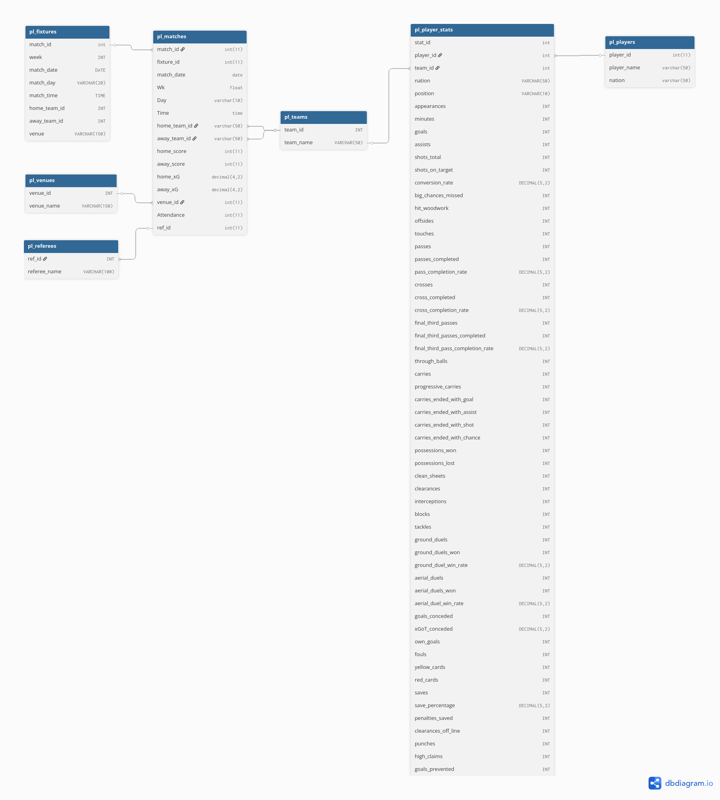

A(r)senal Analysis – English Premier League Data Engineering & Analytics Pipeline
This project demonstrates an end-to-end data engineering and analytics pipeline, investigating the relationship between expected performance metrics (xG, xGA) and actual outcomes in the 2024–2025 Premier League season. Focusing on Arsenal FC, the project showcases containerized database management, relational data modeling, SQL-based data transformation, and R-powered regression analysis built on a reproducible homelab architecture.
About
This repository explores the 2024-2025 English Premier League season by building a robust data infrastructure from scratch. The goal is to demonstrate full-stack data capabilities, from provisioning a database server and designing data models to executing statistical analysis and visualizations.
The project workflow involves: - Infrastructure & Ingestion: Provisioning a Dockerized MariaDB instance on a Debian server to ingest multi-source Premier League data. - Data Engineering (ELT): Designing a relational database schema, followed by cleaning, normalizing, and aggregating raw datasets directly within the database using advanced SQL. - Analytics & Visualization: Connecting an R/Python client environment directly to the database to perform exploratory analysis, statistical modeling, and automated RMarkdown reporting.
Data Engineering & Architecture
Instead of analyzing flat CSV files, this project relies on a strictly modeled client-server architecture:
- Homelab Server (Backend): A Debian 13 server running a Dockerized MariaDB container. This acts as the centralized data warehouse, handling data storage and SQL-driven normalization.
- Relational Data Modeling: Raw data was mapped into a structured relational schema, allowing seamless multi-season joins across match, player, and fixture datasets.
- Client Machine (Analytics): A CachyOS (Arch Linux) workstation utilizing VSCode and RStudio to query the MariaDB instance via the
RMariaDBconnector, ensuring analytical workflows are reproducible and pipeline-driven.

Analytics Results Summary
The data pipeline successfully fed into regression models and interactive dashboards, revealing the following key insights: - Found a strong positive correlation (r = 0.92) between Expected Goals (xG) and Goals For (GF). - Observed a decline in Arsenal’s xG (−21%) compared to the previous season. - Identified heavy midfield dependency for goal contribution (48% cumulative share).
Folder Structure
data
Contains raw and processed datasets. - cleaned_manual: Initial flat files. - cleaned_sql: Datasets transformed and normalized via SQL ELT processes.
projects
Core project scripts and workflows: - SQL & Database Management: Scripts used to design the MariaDB schema, store multi-source data, and execute data cleaning/aggregation for automated pipelines. - A(r)senal Analysis (R): R scripts that query the database to conduct statistical/regression analysis and produce dynamic RMarkdown reports. - Arsenal Python Analysis: Jupyter notebooks exploring predictive match modeling.
docs & visuals
docs: Project documentation, including database schema diagrams.visuals: Generated plots, charts, and visualizations.notebooks: Reserved for experimental Jupyter notebooks.
Technical Skills Highlighted
- Data Pipeline & Infrastructure: Docker containerization, Debian server administration, client-server integration, and reproducible workflow design.
- Data Engineering (SQL): Relational database design, data normalization, complex joins, and aggregations in MariaDB.
- Statistical Analytics (R): Regression, correlation, and automated reporting via RMarkdown.
- Visualization: ggplot2, Tableau Public, and Metabase.
Software Stack & Packages
- Languages: SQL, R 4.4, Python.
- Database: MariaDB (Docker).
- R Ecosystem: DBI, RMariaDB, tidyverse, dbplyr, ggplot2, knitr, broom.
- Version Control: Git & GitHub.
Data Sources
Data ingested from multiple sources to test relational joining capabilities: 1. EPL Player Match Data (24/25) - Kaggle 2. EPL Fixture Data (24/25) - Kaggle 3. EPL Match Data (24/25) - FBRef 4. Arsenal Squad Data (23/24) - FBRef 5. EPL Season Table (24/25) - FBRef 6. EPL Season Table (23/24) - FBRef